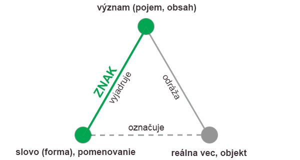
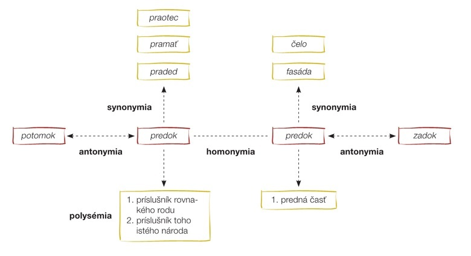

slovo je základná jazyková jednotka s ustálenou grafickou, zvukovou formou, ktorá je nositeľkou ustáleného významu
má lexikálny význam (obsah) a gramatický význam (obsahuje gramatické kategórie)
má schopnosť zastúpiť vec z reálneho / mimojazykového sveta (predmet, osoba, vlastnosť, proces, predstava a pod.)
zastupuje reálne predmety, preto sa stáva jazykovým znakom. Jazykový znak má zvukovú (formálnu) a významovú stránku
Lexikálny význam slova
je to vecný / obsah slova, ktorý je ustálený
zhluk hlások bez významu nie je slovo
môže sa:
zužovať - napr. palec - kedysi, a v niektorom nárečí doteraz, akýkołuek prst, palec - teraz jeden z prstov na ruke alebo nohe
rozširovať - napr. limonáda - pôvodne len nápoj z citrónov, limonáda - teraz akýkoľvek ovocný nealkoholický nápoj
prenášať - napr. list na strome a list papiera, líška - zviera a líška - golier na kabáte
Pojem
pojem je základná forma myslenia spoločná pre všetkých ľudí s rovnakou skúsenosťou bez ohľadu na reč, ktorou hovoria
vzniká zovšeobecnením (abstrakciou) podstatných vlastností celej triedy rovnocenných predmetov, ktoré ľudia odpozorovali v realite
pojmy utvorené v mysli skúsenosťou mnohých generácií dokážeme definovať
pojmy tvoria terminológiu všetkým vedným odborom
Sématický trojuholík

znázorňuje vzťah medzi reálnou vecou, pojmom a slovom
plnou čiarou naznačujeme priamy vzťah, čiarkovanou čiarou zasa nepriamy vzťah
Rozsah významu slova
rozsah významu slova je daný súborom predmetov alebo javov, ktoré obsahujú jeho základné znaky
keď sa pomenovanie (slovo) vzťahuje na velký počet predmetov s tými istými základnými znakmi, význam slova má veľký rozsah (slovo strom pomenúva všetky dreviny, slovo breza pomenúva len jeden druh)
Obsah významu slova
obsah významu slova je daný počtom významových vlastností, ktoré sú charakteristické pre isté pomenovanie. Napr. obsah významu slova jabloň je bohatý — je to strom rodiaci jablká, s kmeňom, s istým tvarom koruny a listov a pod.
čím má slovo väčší rozsah, tým má menší obsah - tým menej charakteristických významových vlastností obsahuje
↑ najväčší rozsah ↑
↑ najmenší obsah ↑
Slovan
človek bielej pleti, príslušník slovanského etnika
Slovák
človek bielej pleti, príslušník slovanského etnika, príslušník slovenského národa
Trnavčan
človek bielej pleti, príslušník slovanského etnika, príslušník slovenského národa, obyvateľ mesta Trnava
↓ najmenší rozsah ↓
↓ najväčší obsah ↓
Gramatický význam slova
gramatický význam slov nie je viazaný na jediné konkrétne slovo či pomenovanie, ale je spoločný pre rovnakú kategóriu slov (napr. pre slovný druh podstatných mien či slovies)
nazývame ich kategoriálne významy — gramatické kategórie
gramatický význam slova sa teda prejavuje v gramatických kategóriách
menné gramatické kategórie (rod, číslo a pád) majú podstatné mená, prídavné mená, zámená a číslovky. Slovesné gramatické kategórie (osoba, číslo, čas, spôsob, vid, slovesný rod) majú slovesá
gramatický tvar slova má lexikálnu a amtickú časť slova:
tvar slova
lexikálna časť slova
gramatická časť slova
chlap-mi
chlap- = dospelá osoba mužského pohlavia (chlap)
-mi = viac osôb / predmetov mužského rodu zúčastňujúcich sa na deji
chlapc-ovi
chlapc- = nedospelá osoba mužského pohlavia (chlapec)
-ovi = jedna osoba mužského rodu, k osobe smeruje napr. činnosť
rob-te
rob- = vykonávať prácu (robiť)
-te = rozkaz (na vykonávanie práce alebo nejakej činnosti) pre viac osôb alebo pre osobu, ktorej vykáme
- nositeľ vecného významu slova
gramatická prípona - nositeľ gramatického významu slova
Vzťahy medzi lexikálnymi významami slov
Súčasťou lexikológie je lexikálna sémantika (náuka o význame slov a slovných spojení), ktorá skúma vzťahy medzi jazykovými jednotkami.

Viacvýznamovosť — polysémia
Slovo je nositeľom ustáleného významu, môže pomenovať jeden obsah / jednu skutočnosť - jednovýznamové slovo alebo viacero
myšlienkových obsahov - viacvýznamové slovo. Jednovýznamové slová majú iba základný význam, patria tam napr. termíny/odborné
slová (ventilátor - vetrací prístroj). Polysémia slova je jav, pri ktorom sa jedným slovom pomenúvajú viaceré
myšlienkové obsahy. Viacvýznamové slovo má základný a odvodený význam. Medzi základným významom slova a významom odvodeného
slova je zjavná súvislosť. Nový význam vzniká:
na spôsob metafory - prenesením lexikálneho významu
na základe podoby (napr. l. jazyk v ústach, 2. jazyk v topánke)
na základe rovnakého fungovania pomenovaného predmetu (1. noha — končatina a 2. noha stola/stoličky)
na základe charakterových vlastností (napr. 1. líška — zviera a 2. líška — prešibaný človek)
na spôsob metonymie - prenesením lexikálneho významu na základe napr. priestorových, časových, príčinných Či iných súvislostí (napr.:
l. inteligencia - duševná vyspelosť, 2. inteligencia - sociálna vrstva, ktorá je nositelom tejto vlastnosti)
Viacvýznamovosť zachytávajú výkladové slovníky, napr. Slovník súčasného spisovného jazyka (SSSJ), Krátky slovník slovenského jazyka (KSSJ),
v ktorých je základný význam slova označený číslicou l. Niektoré slová majú aj dva alebo viac základných významov. Pri nich sa významy v slovníku členia tak,
že za prvým základným významom sa uvádzajú odvodené významy, potom nasleduje druhý základný význam a za ním zase od neho odvodené významy.
Interpretáciu a výber konkrétneho významu určuje kontext, celková situácia, ale aj skúsenost a očakávania prijímatela.
Rovnozvučnosť - homonymia
Rovnozvučnosť / homonymia je jav, ked dve slová majú rovnakú formu - rovnako znejú, ale pomenúvajú iné myšlienkové obsahy = homonymá / rovnozvučné slová.
Medzi lexikálnymi významami týchto slov niet na prvý pohľad viditeľných súvislosti, ich rovnozvučnost je náhodná (napr. čelo - čast hlavy a čelo - hudobný nástroj).
Pri homonymách nemôžeme jeden význam považovať za základný a druhý za odvodený - obe jazykové jednotky sú rovnocenné. Homonymiu / rovnozvučnosť zaznamenáva SSSJ
a špeciálne Homonymický slovník od Márie Ivanovej-Šalingovej. Homonymá sa vo výkladových slovníkoch uvádzajú ako dve samostatné heslové slová a sú označené
horným indexom.
Synonymia
Synonymia je jav, keď sa jednému významu prideluje viac foriem - jedna vec, dej, jav atď. sa pomenúva viacerými inak znejúcimi slovami,
napr. črievice, topánky, obuv. Synonymá sú rovnoznačné slová s rovnakým alebo blízkym významom. Absolútne synonymá sú slová s úplnou zhodou významu
(napr. veľa - mnoho, rozprávať - hovorit). Čiastočné synonymá sú slová s podobným významom (napr. mladý - svieži, čistiť zemiaky - škriabať zemiaky).
Synonymá vytvárajú synonymické rady, ktorých členy však nie sú rovnocenné. Dominantné slovo radu (dominanta) je zvyčajne štylisticky neutrálne,
a preto najfrekventovanejšie, napr. kvetináč — kvetník — črepník — črep. Synonymické rady alebo dvojice slov s rovnakým alebo blízkym významom
zachytáva Synonymický slovník slovenčiny. Slová zo synonymického radu si nevyberáme voľne, ale s prihliadnutím napr. na prostredie, v ktorom sa
jazykový prejav realizuje, na autorský zámer ap.:
prihovoriť sa dieťaťu: hačať - detská reč, namiesto sedieť
úmysel uraziť v hádke: zobák - pejoratívne slovo, namiesto ústa
citovo zapôsobiť: hodiť flintu do žita - frazeologizmus, miesto vzdať sa
Pri tvorbe jazykového prejavu berieme do úvahy nielen vecný význam synonyma, ale aj jeho štylistický príznak, napr. hovorový (zákusok - dezert), odborný
(uprednostňovať - preferovat), administratívny (prevádzka - činnost), knižný (dvojstranný - ambivalentný), publicistický (stretnutie - míting).
Antonymia
Antonymia je jav, pri ktorom sú dvojice slov protirečivé, či významovo protikladné (antonymá / opozitá - slová s opačným / protikladným významom). Antonymá môžu mať formu
(napr. noc - deň, múdry - hlúpy) alebo len čiastočne odlišnú formu (napr. šťastie - nešťastie, prísť - odist). Antonymia ako výrazový prostriedok sa často využíva
hlavne v publicistickom a v umeleckom štýle. Významovú protikladnosť, či protirečivosť slov využíva štylistická figúra oxymoron. V štylistickej figúre oxymoron
sa spoja dve vzájomne sa vylučujúce slová (strašne krásne - buď to bolo krásne, alebo strašné). Nachádza sa v hovorovom (starý mládenec) i v umeleckom štýle
(napr. krutá lúbosť, výrečné ticho).
Paronymia
Paronymia je jav, pri ktorom sa vedľa seba náhodne ocitnú dve jazykové jednotky, ktoré sú zvukovo i gramaticky podobné (nie však totožné), ale významy majú
rozdielne, napr. bor - bôr; filter - fliter; des - sed. Paronymá (náhodne súzvučné slová) nemajú stabilnú funkciu v jazyku, vznikajú náhodne.
Používame ich najčastejšie nechtiac, ale niekedy aj zámerne ako prvok na oživenie textu. Paronymiu spracúva Paronymický slovník. Paronymá sú nevhodné v oficiálnej
odbornej alebo úradnej komunikácii. Využívajú sa v umeleckej literatúre, napr. paronomázia - zvuková štylistická figúra, ktorá je postavená na spojení slov
s rovnakým slovným základom (napr. slavme slavně slávu Slavov slavných - J. Kollár) a publicistike (neúctivý titulok v bulvárnych novinách: Dohabaná Habancová).
Paronymiu (aj homonymiu) využíva štylistická figúra kalambúr (slovná hra: milovanie milo vanie).
Slovná zásoba
Základné vlastnosti slovnej zásoby
rozsiahlosť - nespočetné množstvo slov sa ani nedá slovníkovo zachytiť
otvorenosť - prijímanie nových slov a vypadávanie zastaraných slov
dynamickosť - prijímanie nových slov a ich zapájanie do lexikálneho systému
multištruktúrnosť - vytváranie vzťahov slova s inými slovami, napr. slovotvorné, synonymické, antonymické vzťahy
Časti slovnej zásoby
jadro - centerum slovnej zásoby - tvoria ho slová, ktoré vymenúvajú základné javy ovplyvňujúce život človeka. Sú tam najpoužívanejšie slová
(a, veľký), najstaršie slová (matka, tri), základové, neodvodené slová (jesť, voda), od ktorých možno tvoriť odvodené slová, domáce alebo zdomácnené slová (noha, škola),
nacionálne a neutrálne slová / bez citového a štylistického príznaku (hovoriť). Centrum slovnej zásoby je relatívne stále, mení sa oveľa pomalšie ako periférna časť
slovnej zásoby
okraj - periférna časť slovnej zásoby - je veľmi variabilná, pohyblivá, slová do nej vstupujú alebo z nej vypadávajú. Slová z periférnej časti používa
menšia časť používatelov jazyka, používajú sa menej často než slová z jadra slovnej zásoby, sú príznakové. Nachádzajú sa tam napr. archaizmy (jazykospyt),
historizmy (dereš), neologizmy (smartfón), odborné slová (termíny - koník lúčny), cudzie slová (teritórium), básnické slová (lkat), slová s citovým príznakom (mamka),
vlastné mená (Timea), odvodené slová (ľadový). Sú menej frekventované ako slová z jadra slovnej zásoby, ale vo svojom jazykovom štýle sa používajú často
Druhy slovnej zásoby
individuálna - každý človek si rozvíja svoju individuálnu slovnú zásobu čítaním, počúvaním rozhlasu, komunikáciou... Bohatá slovná zásoba a sčítanosť
ulahčuje proces učenia a štúdium. Rozsah slovnej zásoby u jednotlivcov je rôzny.
aktívna - súhrn všetkých slov, ktorým jednotlivec rozumie a ktoré v bežnej komunikácii využíva
pasívna - súhrn všetkých slov, ktorým jednotlivec rozumie, ale vzhľadom na odborné alebo iné zameranie ich v komunikácii nepoužíva
základná - všetky slová v slovenskom alebo inom národnom jazyku patria do slovnej zásoby národného jazyka. Keď sa učíme cudzí jazyk, učíme sa
najfrekventovanejšie slová v bežnej komunikácii - základnú slovnú zásobu
Systém slovnej zásoby
Slovnú zásobu (už existujúce slová a slovné spojenia) využívajú účastníci verbálnej komunikácie ako komunikačný prostriedok, aby pomocou nej pomenúvali veci okolo seba,
vyjadrovali svoj vzťah k predmetom reálneho sveta, aby efektívne komunikovali v pozícii autora či prijímatela. Zároveň používatelia jazyka vytvárajú aj nové slová.
Slovná zásoba, ako aj jazyk všeobecne, ovplyvňuje naše myslenie a je prostriedkom nášho myslenia, vnímania a správania sa (napr. existenciu slova ponáhlať sa
podmienila potreba spresniť jav rýchlo kráčajúceho človeka, inak by postačilo aj slovo íst). Náš obraz o svete sa formuje aj prostredníctvom jazyka.
Prijímateľ ako aktívny účastník komunikácie interpretuje text po svojom. Jeho pochopenie významu slov a interpretácia textu zavisí napr. od hĺbky poznania jazyka,
skúseností, prostredia, v ktorom žije, od stupňa vzdelania a pod. Musí rozlíšiť nielen funkciu textu, ale aj rozpoznať napr. slovnú hru, iróniu, metaforu - nemôže
chápať každé slovo v jeho základnom význame. Vníma ho v kontexte a zároveň ho ovplyvňujú aj isté očakávania, ktoré má od konkrétnej komunikácie.
Slová v slovnej zásobe môžeme usporiadať podľa viacerých hľadísk:
štylistického príznaku
spisovnosti
časového príznaku
citového príznaku
pôvodu
Štruktúra systému slovnej zásoby je dynamická - záleží na komunikačnej situácii, či slovo vnímame ako neutrálne alebo ako štylisticky príznakové
(napr. slovo idiot ako termín i ako nadávka; byvolia krava - v odbornom texte z biológie; krava - hovorovom štýle v rozhovore o zvieratách; krava - v hádke ako nadávka).
Slová podľa štylistického príznaku
štylisticky príznakové slová
hovorový štýl
hovorové slová - vodičák, presilovka...
profesionalizmy - používajú ich ľudia s rovnakým povolaním, napr. hasák (rúrkové kliešte)...
náučný štýl
odborné slová / termíny
domáce - primkýnanie, kyselina sýrová...
internacionálne - fraktúra...
zmiešané - rezonančná skriňa...
umelecký štýl
knižné slová - bázlivý, činiť...
poetizmy / básnické slová - bázlivý, činiť...
príležitostné slová / okazionalizmy - paláska, špatnokrásny...
biblizmy - farizej, manna...
administratívny štýl
kancelarizmy - platca, predlatné...
termíny - vyhláška, príjemca...
publicistický štýl
publicizmy / žurnalizmy - politikum, brexit...
odborné slová / termíny - dementi, komuniké...
knižné slová - progres, manipulátor...
štylisticky nepríznakové slová
všetky jazykové štýly
neutrálne slová - otec, voda...
Slová podľa spisovnosti
spisovné slová
zemiaky, učiteľ...
umelecký štýl
dialektizmy / nárečové slová - zemáky, krumple...
slangové slová - oblbovák, slepák...
argotové slová - jazyk spodiny, napr. tráva, fet, fízel...
Slová podľa citového príznaku
slová s citovým zafarbením
expresíve slová
s kladným citovým príznakom
zdrobneniny - rúčka, nožička...
rodinné slová - mamka, Janíčko...
detské slová - papať, maco...
zjemňujúce výrazy - prihol sa (opil sa), odišiel (zomrel)...
so záporným citovým príznakom
hanlivé slová - frňák (nos), laba (o nohe človeka)...
nadávky - mamľas, teľa...
slová so zveličujúcim významom - nosisko, kusisko...
vulgarizmy - oslopaný, nažrať sa (o človeku)...
slová bez citového zafarbenia
nocionálne slová
ruka, Ján, medveď...
Slová podľa pôvodu
domáce slová
dvere, voda...
zdomácnené / prevzaté slová - škola, omša...
cudzie slová
pravopisne neznáme slová - pizza, laser...
rozlične adaptované slová - softvér, víkend...
internacionalizmy / medzinárodné slová - parabola, geografia...
Slová podľa časového príznaku
historizmy - predmet, ktorý slovo pomenúva, zanikol
groš, pionier...
archaizmy - pomenovaný pred ešte existuje, no má iný názov
temnica - väzenie, biednik - úbožiak...
zastarané slová - pomenovaný pred ešte existuje, no má iný názov, ale malá časť ľudí ešte používa starý výraz
zomrelý - mŕtvy, rínok - námestie...
neologizmy - nové slová, ktoré pomenúvajú nové raálie, činnosti, javy...
cudzieho pôvodu - mobil, akcia...
domáceho pôvodu - dlhopis, zaheslovať...
kombinované - eurominca, ozónová diera...
Slovná zásoba
Slovná zásoba jazyka je sústredená v slovníkoch. Slovníky sa rozdelujú podľa viacerých kritérií, napr. podľa veľkosti (vreckové, krátke), spôsobu spracovania slov
(napr. informativne/encyklopedické, výkladové), obsahového zamerania (napr. nárečové, historické, synonymické, výslovnostné), počtu jazykov
(napr. dvojjazyčný prekladový slovník). Opis slovnej zásoby jazyka z rôznych hľadísk zachytávajú slovníky v knižnej a v elektronickej forme.
Knižné slovníky
Výkladový - vysvtľuje význam slov a slovných spojení. Je dôležitý pre bežných používateľov jazyka, ale aj pre ľudí, ktorí sa zaoberajú štúdiom.
Používame napr. Slovník slovenského jazyka, Krátky slovník slovenského jazyka...
Normatívny - Krátky slovník slovenského jazyka
Pravopisný - obsahuje slová, s ktorými môžu mať používatelia problémy pri písaní. Používame Pravidlá slovenského pravopisu
Ortoepický - uvádza slová v abecednom poradí a foneticky zapísanú spisovnú výslovnosť. Používame Pravidlá slovenskej výslovnosti
Paronimický - Paronimický slovník
Synonimický - Synonimický slovník slovenčiny
Homonimický - Homonimický slovník
Frazeologický - Malý frazeologický slovník
Etymologický - prináša informácie o pôvode, prvotnom význame a príbuznosti slov. Používame Stručný etymologický slovník slovenčiny
Prekladový - najmenej dvojjazyčný, napr. Anglicko-slovenský slovník
Cudzích slov - Veľký slovník cudzích slov
Terminologický - slovník podľa vedných odborov, napr. Lingvistický slovník
Slovník skratiek - Slovník skratiek a značiek
Slovník slangu - Slovník slovenského slangu
Obohacovanie slovnej zásoby
Zmeny v slovnej zásobe nastávajú nielen pohybom slov medzi jej centrom a periférnou vrstvou, ale aj tvorením nových slov, skracovaním slov, tvorením viacslovných pomenovaní,
tvorením nepriamych / obrazných pomenovaní a preberaním slov z cudzích jazykov. Tvorením slov sa zaoberá jazykovedná disciplína slovotvorba, ktorá je súčasťou lexikológie.
1. Tvorenie slov
a) Odvodzovanie slov
Jedným zo znakov slov z jadra slovnej zásoby je to, že možno od nich tvoriť nové slová - existujú teda základové slová (matka, drevo, škola).
Poznáme dva slovotvorné postupy odvodzovanie a skladanie. Pri tvorení slov vznikajú nové lexikálne významy slov, napr. zo slova škola (pomenovanie budovy
alebo inštitúcie) vytvoríme odvodzovaním slovo škol-ník (pomenovanie zamestnania muža). Slovo vytvorené odvodzovaním je odvodené slovo a má
nový lexikálny význam. Každé odvodené slovo sa skladá z dvoch častí. Slovotvorná štruktúra slova pri odvodzovaní je teda dvojčlenná, túto štruktúru slova tvorí:
Slovotvorný základ - časť pôvodného základového slova, ktoré je nositeľom lexikálneho významu. V niektorých odvodenách sloách sa nachádza viazaný
slovotvorný základ: základové slovo dnes už nepoznáme alebo zaniklo a bez predpony neexistuje (napr. do-tknúť, po-tknúť...)
Slovotvorný formant - časť, ktorá obmieňa lexikálny význam slova. Môže ním byť slovotvorná predpona (pra-, pred-, za-...) aj slovotvorná prípona
(-ár, -áreň, -teľ...). Existuje aj kombinovaný slovotvorný formant, v slove je slovotvorná predpona aj prípona. Slovotvorné formanty sa môžu postupne
navrstvovať (napr. naj-ne-u-ver-i-teľ-n-ejší).
Odvodené slová vznikajú aj prechodom k inému slovnému druhu:
pomocou prípony - starý (prídavné meno) --> staroba (podstatné meno)
pomocou predložkových tvarov - pri tom (zámeno) --> pritom (príslovka)
pridanie zvratného zámena - pískať --> pískať si (zmena slovesa na zvaratné sloveso)
b) Skladanie slov
Skladanie slov je slovotvorný postup, pri ktorom sa spoja vždy najmenej dva slovotvorné základy (autoškola, cin-cin, akoby, česko-slovensko-maďarský, päťdesiatpät)
a vytvoria slovo s novým lexikálnym významom. Slovotvorné základy slov sa spoja pomocou spájacej samohlásky, napr. bledý + modrý bled-o-modrý = bledomodrý,
alebo bez spájacej samohlásky, napr. sto + prvý stoprvý.
Z pravopisu zložených slov:
ak má zložené prídavné meno v základoch napr. dve farby (červený a biely = červeno-biely) dva národy (nemecký a ruský = nemecko-rusky) píše sa so spojovníkom
(na rozdiel od bledozelený - jedna farba, lužickosrbský - jeden národ Lužický Srbi)
ak chceme vyjadriť jednotnosť, kompaktnosť dvoch vlastností, píšeme zložené prídavné meno bez spojovníka (gréckorímsky zápas, lyrickoepická skladba)
zložené zámená sa skloňujú podľa príslušných skloňovacích vzorov (takýto človek, takíto ľudia, akýsi človek. akísi Tudia - vzor pekný)
zložené číslovky typu tisíckrát, výnimkou z krátenia
nesklonné číslovky píšeme spolu: sedemdesiattri rokov, dvetisícpäťstodvadsaťtri žiakov (alebo dvetisíc päťsto dvadsaťtri žiakov), ak sa zložené číslovky skloňujú,
píšeme v G. D. A. L. I osobitne desiatky a jednotky
keď nahradíme číslovku číslicou, slovo zostane a preto musíme medzi ne napísať spojovník: 3-krát, 2-ročný
príslovky píšeme väčšinou dovedna (sčasti, nadránom), so spojovníkom píšeme zdvojené príslovky (tak-tak, už-už) a príslovky skladajúce sa z antoným
(dnes-zajtra, voľky-nevoľky)
príslovky označujúce farbu a tie, ktoré označujú, od akého veku alebo od akého vzrastu sa dej koná, píšeme osobitne i dovedna (do biela / dobiela, od mlada / odmlada)
väčšinu častíc píšeme dovedna (takisto, ktovie, zmeravené)
častice utvorené z dvoch rovnakých slov (len-len) píšeme ako zložené slovo so spojovníkom, niektoré viacslovné častice i osobitne: čo i len, a len, priam tak
dovedna sa píšu spojky, ktoré vznikli z predložkových zámen alebo spojky s časticou -by (medzitým, preto, žeby)
spojku akoby píšeme dovedna, ak dá sa nahradiť spojkou ako keby (Vyzerá, akoby nejedával. / Vyzerá, ako keby nejedával. Ale: Rozmýšľa, ako by sa čo najlepšie odvďačila.)
zložené citoslovcia nemajú ustálený pravopis (hi-hi-hi! hihihi!)
pri skladaní slov vznikajú aj zložené slová, v ktorých sa vyskytujú dve dlhé slabiky nasledujúce po sebe (napr. šéftréner, tisícnásobný, stýkrát)
c) Skracovanie slov
Pri skracovaní slov nevytvárame nový lexikálny význam slova, význam skratky je rovnaký ako vo východiskovom slove alebo slovnom spojení. Zredukujeme len počet písmen,
napr. zo slova zostane jedno písmeno (h), skupina prvých písmen (hod), prvé a posledné písmeno (fa - firma, Dr.), iniciály všetkých slov v slovnom spojení (SND),
či skupina písmen z každého slova v slovnom spojení (Slovnaft). Skracovanie je dôsledkom ekonomizácie (zostručnenia) textu hlavne v písaných prejavoch administratívnej
a odbornej komunikácie, ale nachádzame ho aj v bežnej komunikácii (chodím do práce MHD, učí na SOŠ).
Z pravopisu skrátených slov:
grafické (textové) skratky píšeme s malým písmenom s bodkou na konci: č. / čís., t. j., s. (strana, aj str.), veľmi vzácne sú z východiskového
slovného spojenia ponechané len samohlásky (a iné --> ai.), vedecko-pedagogické tituly píšeme malým písmenom pred menom: doc., prof.
v iniciálových skratkách (názvy inštitúcii, štátov) píšeme každé prvé písmeno (iniciálu) velké, bez bodky na konci: DÚ (daňový úrad), NR SR
(Národná rada Slovenskej republiky), ak by inštitúcie mali mať rovnakú skratku, pridá sa ďalšie (malé) písmeno: SPŠS (stredná priemyselná škola strojnícka)
a SPŠSt (stredná priemyselná škola stavebná)
iniciálové skratkové slová (pri výslovnosti ich nehláskujeme ako iniciálové skratky) skloňujeme podľa príslušných vzorov, píšu sa veľkými písmenami (NAPANT/NAPANT-u)
alebo prvé písmeno je veľké (SĽUK / SĽUK-u / Sľuk / Sľuku, Slovnaft - Slovenská nafta)
neiniciálové skratkové slová / skratkové slová píšeme s malým písmenom, niektoré sa skloňujú, iné sú nesklonné (deko, detox, bus)
v chemických značkách píšeme prvé písmeno velké, bez bodky na konci (O, Cu, H)
menové jednotky píšeme rovnako (KČ = Koruna Česká), ale v oficiálnych kurzových listoch rešpektujeme európske požiadavky na značky menových jednotiek:
EUR (euro), CZK (Česká koruna)
v značkách meracích jednotiek píšeme velké písmeno, len ak je to skratka vlastného mena objaviteľa, bodku na konci nepíšeme: m, cm, kW (kilowat), dB (decibel)
2. Tvorenie viacslovných pomenovaní
Tvorením viacslovných pomenovaní vznikajú združené pomenovania (ustálené slovné spojenia s nepreneseným významom) a frazeologizmy (ustálené slovné spojenia s
preneseným významom). Tvorením združených pomenovaní sa zaoberá lexikológia. Jazykovedná disciplína, ktorá sa zaoberá frazeologickými jednotkami, sa nazýva frazeológia.
Združené pomenovania sú neexpresívne viacslovné pomenovania:
Združené pomenovania sa skladajú z viacerých slov, ale pomenúvajú len jeden predmet. V texte sú premiestniteľné ako jeden celok. Medzi časti združeného pomenovania
nemožno vložiť iné slovo ani meniť ich slovosled či slovný tvar. Združené pomenovania sú ustálené lexikálne jednotky - netvoríme ich vždy nanovo počas komunikácie.
Mnohé zo združených pomenovaní kvôli úspornosti meníme na jednoslovné pomenovania (napr. stužková slávnosť - stužková). Vo viacslovných názvoch jedinečných inštitúcií je
začiatočné písmeno prvého slova velké (napr. Slovenské národné divadlo). Ak sa nachádza na dalŠej pozícii vlastné meno, začiatočné písmeno druhého názvu je tiež
veľké (napr. Národná rada Slovenskej republiky - názov jedinečnej inštitúcie obsahuje aj názov nášho štátu).
Frazeologizmi
Frazeologizmy / frazeologické jednotky (frazémy) sú ustálené, významovo celistvé spojenia dvoch alebo viacerých slov alebo vetné konštrukcie. Frazeologizmy podobne
ako jednoslovné pomenovania sú súčasťou slovnej zásoby národného jazyka ako hotové, ustálené lexikálne jednotky. Majú nasledujúce vlastnosti:
viacslovnosť - najmenej dve slová alebo tvary: predložka + slovo
ustálenosť formy - vo frazeologickej jednotke nemôžeme svojvoľne zameniť slovo, vymeniť zastarané slovo za slovo bez časového príznaku, zmeniť tvar slova,
aj ked už gramatický tvar nezodpovedá súčasnému spisovnému jazyku, zmeniť slovosled alebo zmeniť vetu doplnením chýbajúcej časti vetného člena
obraznosť - frazeologizmy sú lexikálne jednotky s preneseným významom, sú to obrazné pomenovania, a preto nepochopíme ich význam, ak si budeme všímat len
základný význam jednotlivých slov - frazeologizmus má význam ako celok
Pôvod frazeologizmov:
ľudové
porekadlo - komentuje poznatok, čin alebo pripomenie skúsenosť v konkrétnej situácii (padla kosa na kameň, Aká matka, taká Katka.)
príslovie - vychováva, poúča konkrétneho človeka na základe skúseností (Kto druhému jamu kope, sám do nej spadne.)
pranostika - zhŕňa stáročné skúsenosti ľudí s počasím, s ročnými obdobiami alebo so zdravím (Matej lady láme. V marci umierajú starci.)
prirovnanie - zintenzívni názornosť alebo expresívnosť jazykového prejavu, uskutočňuje sa pomocou spojok: ako, sťa, jak, ani, než, akoby, sťaby
(čierny ako žúžol, čuší ako voš pod chrastou, behá ako divý)
intelektuálne - frazeologizmy, ktoré sú často spoločné pre mnohé európske jazyky, napr. kocky sú hodené, bojuje proti veterným mlynom. Pochádzajú napr. z:
starovekej mytológie - Ariadnina niť, trójsky kôň, stojí ako soľný stĺp, Tantalove muky
Biblie - judášsky groš, niesť svoj kríž, posledná večera, sodoma a gomora
umeleckej literatúry - byť či nebyť, bojovať proti veterným mlynom, zločin a trest, silný ako Valibuk
histórie - kocky sú hodené, prekročiť rubikon, Pyrrhovo víťazstvo, objavili Ameriku
3. Pretváranie pomenovaní: univerbizácia a multiverbalizácia
univerbizácia - proces tvorenia jednoslovných pomenovaní, pri ktorom z viacslovného pomenovania (najčastejšie dvojslovného) vznikne jednoslovné pomenovanie
(triedny učiteľ - triedny). Univerbizácia ekonomizuje text v bežnej komunikácii (absťák, kreditka, národné, zimák, vstupné...). Univerbizácia robí text stručnejším,
dynamickejším. Je veľmi frekventovaným javom v hovorovom Štýle, signalizuje neoficiálne, zväčša ústne jazykové prejavy. Často sa nachádza aj v pásme reči postáv
v umeleckej literatúre
multiverbalizácia - proces tvorenia viacslovných pomenovaní, pri ktorom sa viacerými slovami pomenúva činnosť, ktorá bola pôvodne nazvaná jednoslovným pomenovaním
(opraviť --> vykonať opravu, zaujímavo --> zaujímavým spôsobom, v súčasnosti --> v súčasnej dobe). Multiverbizáciu využívame v odbornej, publicistickej a v
administratívnej komunikačnej sfére. Signalizuje oficiálny, hlavne písaný text.
4. Tvorenie nepriamych / obrazných pomenovaní
V obrazných pomenovaniach sa uchováva historická skúsenosť viacerých generácií, a preto sú mnohé z nich súčasťou národného dedičstva. Okrem lexikológie nepriame / obrazné
pomenovania skúma literárnovedná disciplína - teória literatúry.
metafora - nepriame pomenovanie, nahrádzanie slova slovom iného druhu: vzniká zámenou jedného slova / slovného spojenia iným slovom / slovným spojením na
princípe podobnosti javov, predmetov (napr. hviezda - celebrita, žeriav - stroj, oko - oko na sieti). Ak vytvárame metaforu, prepožičiavame predmetu iné pomenovanie,
pretože vnímame podobnosť medzi tým, čo slovo už pomenúva, a tým, čo chceme nazvať. Metafora však nielen krášli text, ale aj napr. pomenúva alebo objasňuje
(hlavička písomnosti, hlava štátu, hĺbková štruktúra), hodnotí a vyjadruje postoj (predal sa - napr. zradil stranu, má mäkkú povahu, To prasa!), zovšobecňuje
(hyeny - pomenovanie zištných politikov) ap. Treba si uvedomiť, že tvorca metafory ju môže vnímať inak ako jej prijímatel / interpret. Podľa používania v komunikácii
sa vydeľuje:
lexikalizovaná metafora - ide o už zaužívanú metaforu, na ktorej obraznosť sme si už zvykli (koleno na nohe a koleno na odpadovej rúre), a vnímame
viac opisnú či pomenovaciu schopnost (napr. v odbornom názve hlava valca, hlava zákona, myš počítača). Lexikalizovaná metafora sa vyskytuje vo všetkých jazykových
štýloch, je častá aj v náučnom štýle
aktualizovaná metafora - ide o originálnu (básnickú) metaforu, ktorá je založená na predstavivosti, na asociácii (vietor sa šmýkal, v poslednom lúči
starootcovská horela rola), je veľmi častá v umeleckom štýle, ale aj v rečníckom a v publicistickom štýle. Okrem umeleckých textov ju nájdeme často v reklame,
v politickej rétorike, ale aj v bežnej komunikácii
personifikácia - je druhom metafory, za personifikáciu považujeme prípad, keď neživá vec vykonáva činnosť ľudskej bytosti (napr. zem spieva, les hovorí).
Neživej veci (téme) sa pripisuje čast vlastností (báza) živej bytosti (figúra)
metonymia - prenesenie významu z východiskového slova na cielové slovo na základe vecnej alebo logickej súvislosti (napr. dedina povstala - nie obec, ale
ľudia bývajúci v nej). Je prostriedkom úspornosti / ekonomizácie textu - „vystrihne" z vety len to najnutnejšie. Pri metafore je dôležitá podobnost a pri metonymii sú
dôležité časové, priestorové, príčinné súvislosti dvoch predmetov:
autor - dielo - číta Hviezdoslava = jeho dielo
celok - časť - zašiť rukáv = dieru na rukáve, nie celý rukáv
priestor - obyvateľ / majiteľ - Slovensko nezaspalo = obyvatelia Slovenska nezaspali
činnosť - nástroj - živí sa jazykom = je tlmočník
činnosť - výsledok činnosti - spôsobila to tlač = je výsledkom činnosti tlačenie
nádoba - obsah - vypil celý pohár = vypil len obsah pohára
materiál - výrobok - chodí v hodvábe = v šatách z hodvábu
Druhom metonymie je synekdocha - význam slova sa prenáša na základe kvantitatívnych vzťahov, v textoch sa najčastejšie vyskytuje zámena:
čast za celok - moja noha tam viac nevkročí = nielen noha, ale celá osoba
celku za časť - Bratislava sa teší. = nie celá Bratislava, len viacero jej obyvaterov sa teší
singuláru za plurál - tam sa na žiaka kladú veľké nároky = na všetkých žiakov sa tam kladú veľké nároky
5. Preberanie slov
Po celý čas vývoja nášho jazyka trvá proces preberania slov z iných jazykov. Kým sme si v minulosti rozširovali slovnú zásobu národného jazyka predovšetkým slovami z
latinčiny (vírus), gréčtiny (škola) či nemčiny (kráľ) a zo slovanských jazykov, v súčasnosti sa slovenčina ako iné európske jazyky internacionalizuje, preberá cudzie
slová hlavne z angličtiny. Prispôsobenie písania slovenskému pravopisu netrvá rovnako dlho a nemá rovnaký výsledok. Slová sa po čase prispôsobia úplne, niektoré sa aj
po dlhšom čase prispôsobia len čiastočne alebo sa neprispôsobia vôbec alebo sa používa dvojtvar (tínedžer / teenager). Pôvod slov v národnom jazyku skúma jazykovedná
disciplína etymológia (veda o pôvode slov). Jedným z prvých vedcov, ktorí sa zamýšrali nad pôvodom slov v slovenčine, bol Matej Bel a Anton Bernolák. Slovenčina preberá
slová z cudzích jazykov hlavne z týchto dôvodov:
chýba domáci výraz - nestihli sme ho vytvoriť (snoubord, klonovať)
domáci výraz je dlhší, náročnejší na výslovnosť - programové vybavenie počítača = softvér, podporovateľ = sponzor
potreba internacionálneho odborného slova - napr. v profesionálnom prostredí (aorta namiesto srdcovnica)